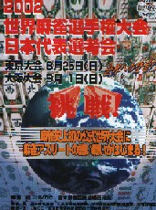

今年の10月24日〜28日に中国の寧波（ニンポ-）市というところで、中国麻将の世界大会なるものが開かれる。寧波といえば、麻雀発祥の地。世界大会にはふさわしい。その宣伝ポスターがこれ。

このポスターによれば、その大会には世界10カ国地から20チーム以上が参加するそうだ（１チーム４人）。で、日本からは東京・大阪から各２名の計４名が選抜され、全額竹書房負担で中国での大会に参加できるという。
この４人を選ぶ東京選抜大会は８／２５、大阪選抜大会は９／１にあるという。我と思わん方は、参加されてはいかが？
と言っても日本麻雀と中国麻将は、同じ道具を使っていても野球とゴルフほど中身が異なる。そこでいきなり選抜戦に出ても勝てるわけがない。たぶん初めて中国麻将を経験した人は、本格的なドンジャラをやっているような気がすると思う。
まずアガリ役が日本の一般麻雀の倍、８0種もある(花牌を加えると81種)。役を覚えるだけでも一仕事。もちろん80あるといっても役満貫などそうそう出来ない。よく出来るのは、１ポイントや２ポイント、あるいは４ポイント役などの低いポイント役である（中国麻将はポイント加算式）。しかしそのアガリ役が複雑にからみあうので、結構大変。
そこで選抜大会に参加したい人は、各地で行われる練習会に参加してノウハウを習得する必要がある。
日本各地の練習会場、あるいは東京・大阪の選抜会など、詳しいことは下記までどうぞ。
０３−３２６４−１８１６ 竹書房内麻雀競技組織委員会
または
０６−６２３１−６８１５ 全荘連
|